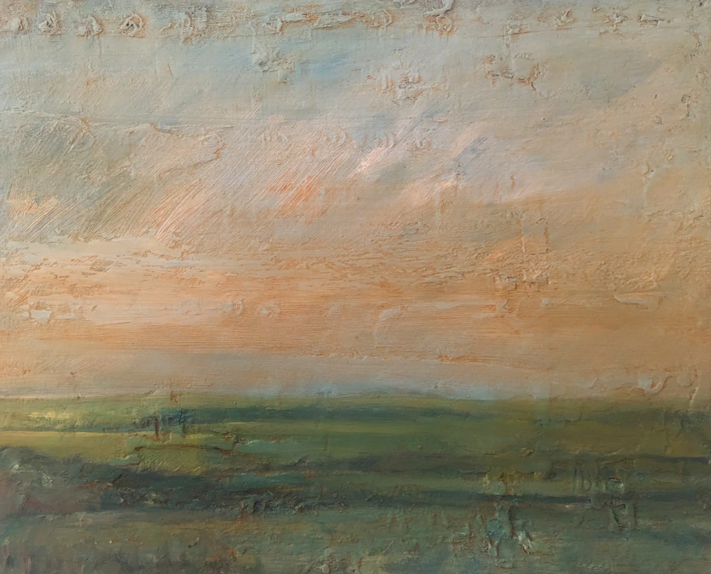

BERNHARDKORADI · PAINTING
Toller Porcorum
Painted on over several sessions, this work explores the early morning light hitting the hills above the village of Toller Porcorum in Dorset.

BERNHARDKORADI · PAINTING
Painted on over several sessions, this work explores the early morning light hitting the hills above the village of Toller Porcorum in Dorset.